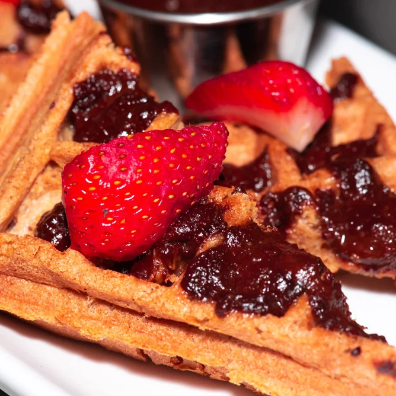

Sapiens Kitchen A little pleasure.
NOTRE BOULANGERIE / PALEO BAKERY
A little pleasure.
Thoughtfully baked.
Housemade Paleo bread, Waffle Tartines, and desserts, with a French heart.

FROM OUR OVEN, WITH LOVE
Beautifully simple.
Entirely Sapiens.
Our bakery follows the kitchen’s Paleo principles. Baking ingredients include root and tuber flours, seeds, vegetables, and oils such as olive and avocado.
Ask about today’s bread, waffles, and desserts, and the available purchasing options. The selection can change, so a quick call is the best place to begin.
THE SAPIENS WAY
Le plaisir, tout simplement.
French technique. Thoughtful ingredients. All the pleasure.
- Gluten-free
- Dairy-free
- Soy-free
- Sugar-free
- Seed oil-free
À bientôt.